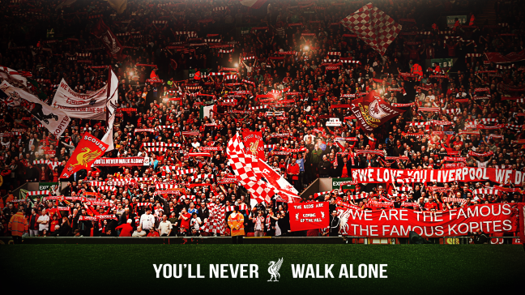

Fan Chants Around the World:
🎶 “¡Olé, Olé, Olé!”:
Background & Origin: This famous chant started in Europe but became globally popular during soccer tournaments. It’s derived from Spanish bullfighting cheers and was adapted by soccer fans in the 1980s.
Lyrics: “Olé, olé, olé, olé… olé… olé!”
Meaning: An expression of passion and support. "Olé" is an exclamation used to cheer or celebrate.
When Fans Chant It: After a great goal, when dominating the match, or to celebrate team spirit.
Who Sings It: Fans of almost every national and club team — it’s truly global.
Fun Fact: The chant exploded in popularity during the 1986 FIFA World Cup in Mexico and has since been adapted in multiple languages and sports.
🔥 “¡Vamos, Vamos!” (Argentina National Team):
Background & Origin: "Vamos, Vamos Argentina" is the unofficial anthem for the Argentina national team and has been sung at every World Cup and Copa América since the 1970s.
Lyrics (in Spanish):
“Vamos, vamos Argentina
Vamos, vamos a ganar
Que esta banda quilombera
No te deja, no te deja de alentar.”
Translation: "Let’s go, let’s go Argentina
Let’s go, let’s go to win
This rowdy group of fans
Will never, will never stop cheering you on."
When Fans Chant It: Before and during matches, especially in major tournaments.
Who Sings It: Argentinian fans at all levels — from street celebrations to stadiums.
Fun Fact: It’s often remixed into other chants and is used in songs celebrating Messi and Maradona.
🎵 “You’ll Never Walk Alone” (Liverpool FC):
Background & Origin: Originally from the Rodgers and Hammerstein musical Carousel (1945), it was adopted by Liverpool fans in the 1960s when the song played at Anfield before games.
Lyrics (chorus):
“Walk on, walk on, with hope in your heart
And you’ll never walk alone…”
Meaning: A message of unity, hope, and loyalty — that fans will always support their team and each other.
When Fans Chant It: Before kickoff at every Liverpool home game and during emotional moments or comebacks.
Who Sings It: Liverpool fans (England), but also used by Celtic (Scotland), Borussia Dortmund (Germany), and Feyenoord (Netherlands).
Fun Fact: Liverpool’s stadium, Anfield, is famous for how loud and emotional the chant sounds. Even rival fans respect it.